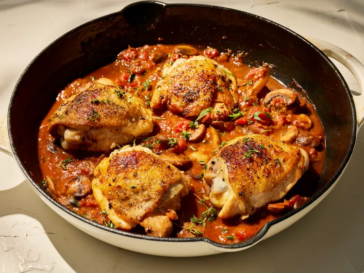

Chicken Chasseur

Great tasting chicken thigh recipe
Chicken chasseur—or chicken, hunter's style—features seared chicken thighs nestled in a delectable mushroom and tomato sauce.
Ingrediants:
- 4 (8 ounce) bone-in, skin-on chicken thighs
- 1 teaspoon freshly ground black pepper
- 1 3/4 teaspoons kosher salt, divided
- 1 tablespoon olive oil
- 8 ounces fresh cremini mushrooms, sliced
- 2/3 cup sliced shallot
- 1 tablespoon tomato paste
- 4 cloves garlic, finely chopped
- 1/2 cup plus 1 tablespoon (optional) sweet vermouth, divided
- 1 (15 ounce) can diced tomatoes
- 1 1/2 cups chicken stock
- 1 teaspoon chopped fresh thyme, plus more leaves for garnish
- 1 teaspoon chopped fresh tarragon (optional), plus more leaves for garnish
- 2 tablespoons cold unsalted butter, cubed
Directions:
- Gather all ingredients.
- Preheat the oven to 375 degrees F (190 degrees C). Pat chicken dry with paper towels. Season both sides evenly with black pepper and 1 1/4 teaspoons of the salt. Heat oil in a large cast-iron skillet over medium heat. Add chicken, skin-side down, and cook, undisturbed, until skin is deeply browned and crispy, 8 to 10 minutes. Turn chicken over, and cook 2 minutes. Transfer to a large plate, and set aside.
- Remove and discard all but 2 tablespoons of the drippings in the skillet. Increase heat to medium-high. Add mushrooms, and spread into an even layer; cook, undisturbed, for 4 minutes. Stir in shallot. Cook, stirring occasionally, until mushrooms are golden brown and tender, about 4 minutes. Add tomato paste and garlic, and cook, stirring constantly, for 1 minute. Remove from heat; add the 1/2 cup vermouth, and cook, stirring occasionally, until almost reduced but some liquid remains, about 1 minute.
- Place skillet over medium-high heat. Stir in diced tomatoes, stock, and remaining 1/2 teaspoon salt. Nestle chicken thighs, skin-side up, in tomato mixture, making sure chicken skin exposed and not covered by tomato mixture. (It's OK if some sides of skin are submerged).
- Place skillet in the preheated oven, and bake, uncovered, until a thermometer inserted into thickest part of chicken registers 175 degrees F (79 degrees C) and sauce has thickened slightly, about 22 minutes. Remove from oven, and transfer chicken to a large platter.
- Place the skillet with mushroom mixture over medium-high heat. Cook, stirring occasionally, until slightly reduced or a spatula leaves a trail when pulled across bottom of skillet, 8 to 10 minutes. Remove from heat, and stir in thyme, tarragon, and butter until butter has melted and sauce is velvety, about 1 minute. Add remaining 1 tablespoon vermouth, as desired.
- Nestle chicken in sauce, and garnish with thyme and tarragon leaves.